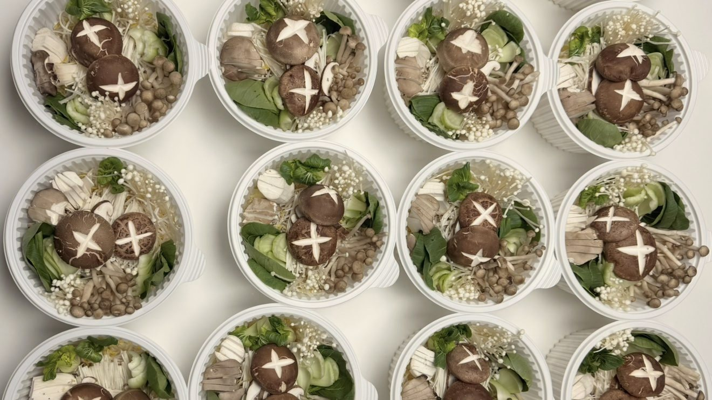

이번 주 사역
사역 안내
필드사역
매주 금요일 10시반찬나눔 출발
21가정다대포 · 지사동
다가오는 사역 일정
연합사역
호스팅국내외 전도팀
게더링교회·단체 연결
다음세대 사역
다음세대드림빌더 사역
세미나For 다음세대

뉴포트 브릿지 미니스트리 비전
Bridge to NK · Next Generation · Nations
남과 북의 하나됨과 하나님 나라 완성을 위한 다리가 됩니다
둘러보기